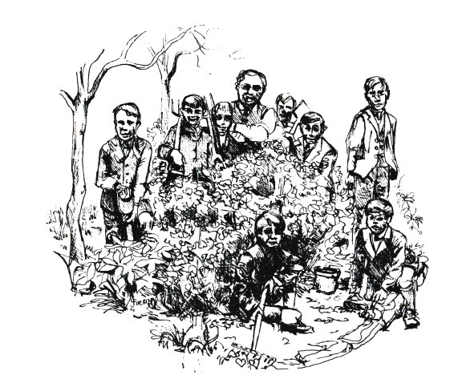

GROWING PEAS
In the large Home Ground at Chisnell, we grew seven acres of Senator peas every year. These were ready for picking in July. Father sold pots of peas to a local wholesale vegetable merchant and we boys picked them – early morning or nights, along with other workers.
These peas were picked for a good three weeks of July, always. A few of the best of them – Dad would mark out about a chain length of them – not to be picked: This patch was hand cut. Teddy, with his fagging hook and stick, harvested them separately and put through the thrasher before the main lot. What a lot of work this made for we boys especially in a wet season! The peas, the main seven acres, was cut with the mowing machine then put in little heaps called ‘wads’ that we had to turn upside down every two days – to dry through if wet. It was an everlasting job any day with a couple of hours sunshine. That night or the next morning, over the wads of peas had to go again, so they didn’t go mouldy with damp. No one liked a wet summer, but repeatedness makes perfect: It did me. At ten or eleven years old, I could go around almost at a run with just a little up and twist of the small two prong fork I owned. We all had our own special tools – fork, hoe and swede bashing knife.
Of peas we had our fill and it’s still one of my favourite veg – raw or cooked. Come the winter nights, a fire was kept in the kitchen stove. Dad brought a measure of dried peas in and emptied them on the kitchen table. Everyone sat, or stood – I did the first two years at six or seven years old.
“Come on,” Dad said. “Sort them!” and sort them you did.
This was the seed for the next year: We used our own seed for 9 to 10 years.
When it was no longer a good paying job, pea stripping machines were used and therefore the big farmers grew bigger acres.
The death of my brother in July 1924 was almost in view of us picking peas on the brow of the field running down to the Lock field. My brother was drowned by the lock gate. All of us ran down to the lock when Mrs. Berry, who lived in the Lockkeeper’s Cottage, shouted to us that he must have fallen in as the butter was floating on the canal. It was another factor my father could not forget. Many a night he would go off to the lock to relive the tragedy over and over.
So in 1929 we moved to Souldern – after 14 years farming Chisnell – my brother, Tom, who’d got married, lived there instead.
